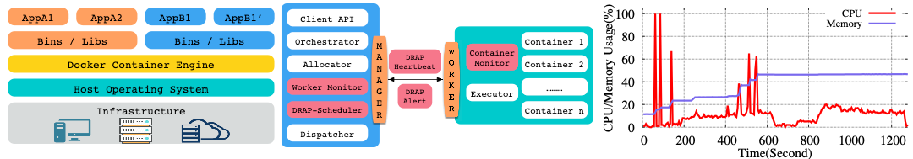
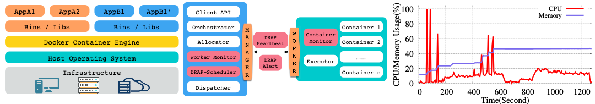
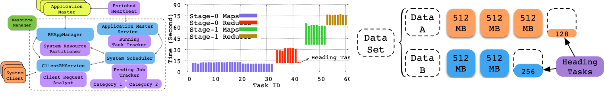
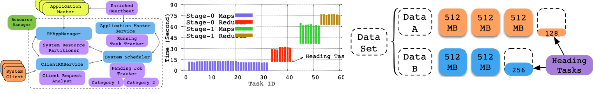

Dynamic Resource Management for Cloud Computing
1. Virtualized Computing Systems (Docker and Kubernetes)
Virtualization is a promising technology that has facilitated cloud computing to become the next wave of the Internet revolution. Adopted by data centers, millions of applications that are powered by various virtual machines improve the quality of services. Although virtual machines are well-isolated among each other, they suffer from redundant boot volumes and slow provisioning time. To address limitations, containers were born to deploy and run distributed applications without launching entire virtual machines. As a dominant player, Docker is an open-source implementation of container technology. When managing a cluster of Docker containers, the management tool, Swarmkit, does not take the heterogeneities in both physical nodes and virtualized containers into consideration. The heterogeneity lies in the fact that different nodes in the cluster may have various configurations, concerning resource types and availabilities, etc., and the demands generated by services are varied, such as CPU-intensive (e.g. Clustering services) as well as memory-intensive (e.g. Web services). In this paper, we target on investigating the Docker container cluster and developed, DRAPS, a resource-aware placement scheme to boost the system performance in a heterogeneous cluster.


2. Data-intensive systems (Hadoop, Yarn and Spark)
In the past few years, we have envisioned an increasing number of businesses start driving by big data analytics, such as Amazon recommendations and Google Advertisements. At the back-end side, the businesses are powered by big data processing platforms to quickly extract information and make decisions. Running on top of a computing cluster, those platforms utilize scheduling algorithms to allocate resources. An efficient scheduler is crucial to the system performance due to limited resources, e.g. CPU and Memory, and a large number of user demands. However, besides requests from clients and current status of the system, it has limited knowledge about execution length of the running jobs, and incoming jobs' resource demands, which make assigning resources a challenging task. If most of the resources are occupied by a long-running job, other jobs will have to keep waiting until it releases them. This paper presents a new scheduling strategy, named DRESS that particularly aims to optimize the allocation among jobs with various demands. Specifically, it classifies the jobs into two categories based on their requests, reserves a portion of resources for each of category, and dynamically adjusts the reserved ratio by monitoring the pending requests and estimating release patterns of running jobs. The results demonstrate DRESS significantly reduces the completion time for one category, up to 76.1% in our experiments, and in the meanwhile, maintains a stable overall system performance.

